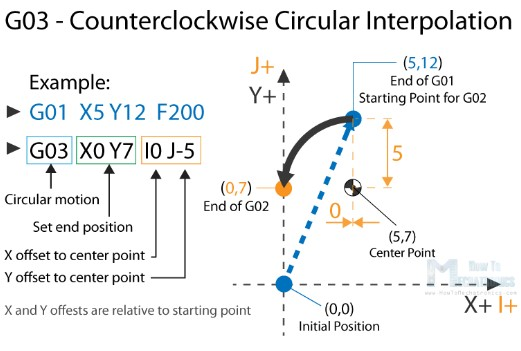

Works
CNC Router Laser Engraving
Project
Introduction
If your work or hobby correlates with CNC machines or 3D printers, then understanding what G-code is and how it works is essential for you. So, in this report we will discuss the basics of the G-code language, what are the most important or common G-code commands and we will explain how they work. G-code is the operational language for CNC machining. It tells numerically controlled lathes and machining centers how to move tools in order to perform various cutting operations. It is equivalent to manual programming where each operation is spelled out line-by-line and is separate from M-code and T-code, codes that control the machine and tooling. G-code fits somewhere between conversational control, where the operator describes the part and how it should be machined, and CAM, or computer-aided manufacturing, programs, where software develops the necessary toolpaths, feed rates, and so on needed for the CNC machine to cut the material into the finished part. Although G-code as a term is often used interchangeably with Numerical Control (NC), it is actually only one component and works in conjunction with other codes to perform the appropriate tasks. The standard version of G-code is known as RS-274D, although other versions do exist for CNC machines with compatibility issues. CNC machines are based around the Cartesian coordinate system, sometimes called rectangular coordinates. The three axes can be identified on a vertical milling machine, for example, by the right-hand rule. In placing one’s right-hand palm up on the machine’s table and extending thumb, forefinger and middle finger so they create three axes, the positive X-axis points in the direction of the thumb; the positive Y-axis, in the direction of the forefinger; and the positive Z-axis, in the direction of the middle finger. Similarly applied, the right-hand rule helps to identify axes on other CNC machines. Positive motions refer to the cutter relative to the workpiece. For instance, if the table was moved left while the tool remained stationary, this would still produce a positive machining action. The intersection of these three axes marks the machine’s home position. Homing the machine will bring the three axes to this X0, Y0, Z0 position. The zero position can be moved to find, for instance, the corner of a workpiece. A language of one-liners, many G-code commands do begin with the letter G, but in fact, all letters of the alphabet are used. Codes beginning with G, M, X, Y, and Z are the most common. In 3D printing specifically, E and F are used for extrusion and feed rate. If you see something like GXX, that’s a preparatory code, and many of them move the machine. MXX codes are the miscellaneous commands, controlling things like coolant, spindle speed, fans, and heaters. X, Y, and Z are coordinates.
How to read G-code Commands?
At first glance, when you see a G-code file, it might look a quite complicated but it is actually not that hard to be understood.
If we take a closer look at the code, we can notice that most of the lines have the same structure. It seems that the “complicated” part of the G-code are all those numbers we see, which are just Cartesian coordinates. Let’s take a look at a single line and explain how it works. G01 X247.951560 Y11.817060 Z-1.000000 F400.000000 The line has the following structure: G## X## Y## Z## F##
• First is the G-code command and in this case that’s the G01 which means “move in straight line to a specific position”.
• We declare the position or the coordinates with the X, Y and Z values.
• Lastly, with the F value we set the feed rate, or the speed at which the move will be executed.
To wrap up, the line G01 X247.951560 Y11.817060 Z-1.000000 F400.000000 tells the CNC machine to move in a straight line from its current position to the coordinates X247.951560, Y11.817060 and Z-1.000000 with speed of 400 mm/min. The unit is mm/min because if we take a look back at the G-code example image, we can see that we have used the command G21 which sets the units to millimiters. If we want the units in inches, we use the G20 command instead.
The most Important/ Common G-code Commands So, now as we know how to read a line of G-code, we can take a look at the most important or commonly used G-code commands. We will learn how each of them work through several examples, and by the end of this tutorial we will be able to fully understand how G-code works, how to read, how to modify and even how to write our own G-code. G00 – Rapid Positioning The G00 command moves the machine at maximum travel speed from a current position to a specified point or the coordinates specified by the command. The machine will move all axis at the same time so they complete the travel simultaneously. This results in a straight line movement to the new position point.
The G00 is a non-cutting movement, and its purpose is to just quickly move the machine to the desired position to begin some kind of job, like cutting or printing. G01 – Linear Interpolation The G01 G-code command instructs the machine to move in a straight line at a set feed rate or speed. We specify the end position with the X, Y and Z values, and the speed with the F value. The machine controller calculates (interpolates) the intermediate points to pass through to get that straight line. Although these G-code commands are simple and quite intuitive to understand, behind them, the machine controller performs thousands of calculations per second in order to make these movements.
Unlike the G00 command which is used just for positioning, the G01 command is used when the machine is performing its main job. In case of lathe or mill, cutting material in straight line, and in case of a 3D printer, extruding material in straight line. G02 – Circular Interpolation Clockwise The G02 command tells the machine to move clockwise in a circular pattern. It’s the same concept as the G01 command and it’s used when performing the appropriate machining process. In addition to the end point parameters, here we also need to define the center of rotation, or the distance of the arc start point from the center point of the arc. The start point is actually the end point from the previous command or the current point. For better understanding, we will add the G02 command after the G01 command from the previous example.
So, in the example first we have the G01 command which moves the machine to the X5, Y12 point. Now this will be the starting point for the G02 command. With the X and Y parameters of the G02 command we set the end point. Now in order to get to this end point using a circular motion or using an arc, we need to define its center point. We do that using the I and J parameters. The values of the I and J are relative to the starting point, or the end point of the previous command. So, to get the center point to the X5 and Y7, we need to make an offset of 0 along the X axis, and offset of -5 along the Y axis. Of course, we can set the center point anywhere else, thus we will get a different arc which ends at the same end point. Here’s an example of that:
So, here we still have the same end point as the previous example (X10, Y7), but the center point is now at different position (X0, Y2). With this we got wider arc compared to the previous one. G00, G01, G02 Example – Manual G-code Programming Let’s take a look at a simple CNC milling example using these three main G-code commands, G00, G01 and G02.

To get the toolpath for the shape shown in the image above we need to following G-code commands: G00 X5 Y5 ; point B G01 X0 Y20 F200 ; point C G01 X20 Y0 ; point D G02 X10 X-10 I0 J-10 ; point E G02 X-4 X-8 I-10 J0 ; point F G01 X-26 Y-2 ; point B With the first G00 command, we quickly bring the machine from its home or initial position to the point B(5,5). From here we start with “cutting” at a feed rate of 200 using the G01 command. We can note here that for getting from point B(5,5) to the point C(5,25) we use values for the X and Y relative to the starting B point. So, +20 units in Y direction will get us to point C(5,25). Actually, this depends whether we have selected the machine to interpret the coordinates as absolute or relative. We will explain this in later section. Once we reach the point C(5,25), we have another G01 command to reach the point D(25,25). Then we use the G02 command, a circular motion, to get to point E(35,15), with a center point (25,15). We actually have the same center point (25,15) for the next G02 command, to get to point F(31,7). However, we should note that the I and J parameters are different from the previous command, because we offset the center from the last end point or the point E. We finish the toolpath with another G01 command which gets us from point F(31,7) back to point B(5,5). So, that’s how we can manually program the G-code for making this shape. Though, we need to note that this is not a complete G-code, because we are missing few more basic commands. We will make the complete G-code in a later example as we first need to explain those G-code commands. G03 – Circular Interpolation Counterclockwise Just like the G02, the G03 G-code command defines the machine to move in circular pattern. The only difference here is that the motion is counterclockwise. All other features and rules are the same as the G02 command.
So, with these three main G-code commands, G01, G02 and G03 we can generate a toolpath for, literally, any shape we want. You might be wondering now how is that possible, but that’s actually an easy task for a computer and a CAM software. Yes, it’s true we can sometimes manually make a G-code program, but most of the time we do that with appropriate software which far more easier and safer. Nevertheless, now explain few more important and commonly used commands and at the end make a real G-code example. G20/ G21 – Units Selection The G20 and G21 commands define the G-code units, either inches or millimters. • G20 = inches • G21 = millimiters We need to note that the units must be set at the beginning of the program. If we don’t specify the units the machine will consider the default set by the previous program. G17/ G18/ G18 – G-code Plane Selection With these G-code commands we select the working plane of the machine. • G17 – XY plane • G18 – XZ plane • G19 – YZ plane
The G17 is default for most CNC machines, but the other two can be also used for achieving specific movements. G28 – Return Home The G28 command tells the machine to move the tool to its reference point or home position. In order to avoid collision, we can include an intermediate point with X, Y and Z parameters. The tool will pass through that point before going to the reference point. G28 X## Y## Z##

The home position can be defined with the command G28.1 X## Y## Z##. G90/ G91 – Positioning G-code commands With the G90 and G91 commands we tell the machine how to interpret the coordinates. G90 is for absolute mode and G91 is for relative mode. In absolute mode the positioning of the tool is always from the absolute point or zero. So the command G01 X10 Y5 will take the tool to that exact point (10,5), no matter the previous position. On the other hand, in relative mode, the positioning of the tool is relative to the last point. So if the machine is currently at point(10,10), the command G01 X10 Y5 will take the tool to point (20,15). This mode is also called “incremental mode”. More Commands and Rules So, the G-code commands we explained above are the most common ones but there are many more. There are commands like cutter compensation, scaling, work coordinate systems, dwell etc. In addition to the G-code, there also M-code commands which are used when generating a real full-fledged G-code program. Here are few common M-code commands: • M00 – Program stop • M02 – End of program • M03 – Spindle ON – clockwise • M04 – Spindle ON – counterclockwise • M05 – Spindle stop • M06 – Tool change • M08 – Flood colant ON • M09 – Flood colant OFF • M30 – End of program In case of a 3D printer: • M104 – Start extruder heating • M109 – Wait until extruder reaches T0 • M140 – Start bed heating • M190 – Wait until bed reaches T0 • M106 – Set fan speed Some of these commands need appropriate parameters. For example, when turning on the spindle with M03, we can set the spindle speed using the S parameter. So, the line M30 S1000 will turn on the spindle at speed of 1000 RPM. We can also note that many codes are modal, which means they remain in effect until cancelled or replaced by another code. For example, say we have a code for linear cutting movement G01 X5 Y7 F200. If the next movement is again a linear cutting, we can just type the X and Y coordinates, without the writing G01 at the front. G01 X5 Y7 F200 X10 Y15 X12 Y20 G02 X5 Y5 I0 J-5 X3 Y6 I-2 J0 The same applies for the feed rate parameter F. We don’t have to include it in every line unless we want to change its value. In some G-code file you can also see “N##” in front of the commands. The N word is simple to number the line or block of code. That can be helpful for identifying a specific line in case of an error in a huge program. Simple G-code Program Example Nevertheless, after reading all of this, now we are able to manually make a real, actual code. Here’s an example:

% G21 G17 G90 F100 M03 S1000 G00 X5 Y5 ; point B G01 X5 Y5 Z-1 ; point B G01 X5 Y15 Z-1 ; point C G02 X9 Y19 Z-1 I4 J0 ; point D G01 X23 Y19 Z-1 ; point E G01 X32 Y5 Z-1 ; point F G01 X21 Y5 Z-1 ; point G G01 X21 Y8 Z-1 ; point H G03 X19 Y10 Z-1 I-2 J0 ; point I G01 X13 Y10 Z-1 ; point J G03 X11 Y8 Z-1 I0 J-2 ; point K G01 X11 Y5 Z-1 ; point L G01 X5 Y5 Z-1 ; point B G01 X5 Y5 Z0 G28 X0 Y0 M05 M30 % Description of the G-code program: 1. Code initialization. This character (%) is always present at the beginning and at the end of the program. 2. Safety line: Set programming in metric system (all dimensions in mm), XY plane, absolute positioning and feed rate of 100 inches/min. 3. Spindle on clockwise at speed of 1000 RPM. 4. Rapid positioning to B(5,5). 5. Controlled motion on the same position, but lowering the tool to -1. 6. Linear cutting movement to position C(5,15). 7. Clockwise circular motion to point D(9,19), with center point at (9,15). 8. Linear cutting to point E(23,19). 9. Linear cutting to point F(32,5). 10. Same straight cutting to point G(21,5). 11. One more straight cutting to point H(21,8). 12. Counterclockwise circular interpolation to position I(19,10), with a center point at (19,8). 13. Linear cutting to point J(13,10). 14. Counterclockwise circular cutting to position K(11,8), with a center point at (13,8). 15. Linear cutting to position L(11,5). 16. Final linear cutting movement to position B(5,5). 17. Rise up the tool. 18. Go to home position. 19. Spindle off. 20. Main program end. What's a G-Code Generator? Generating G-code means creating a full description of how to make something with a machine. Originally, G-code was hand-coded – imagine that! For a simple machined part, this can work. With an understanding of machining, knowledge of the relevant G-codes, and some copy and paste, anyone can create the full G-code recipe for a machined part. In Inkscape there is option of plugin so we have used J Tech Photonics plugin.

Here’s how geode looks ready to be sent to our CNC machine through the Universal G-code Sender software:
Machine shown in picture is commercial product sell by EMBEE group and which helps to manufacture the nets(which helps in textile machines) but this machine has some limitations as discuss above. There is two axis in Laser Bird: 1) Rotary Axis 2) Laser Axis
If we consider Rotary axis as x-axis and laser axis as y-axis then we can describe problem as: Here x-axis moves continues but y-axis is not continues because if moves when one circle is complete on x-axis and when laser also require time to turn off and that’s why it create some error in design as well time require for printing is more. So, the easiest solution for this is that we have to make y-axis also continues so we can save time as well error will be removed. So, to make y-axis (laser axis) continues we have to do something with design which ultimately changes g-code and we get the continuous design. So we have come up with solution that we convert 2D design in 1D design which ultimately makes y-axis movement continues. And there is also one more limitation which is storage related in commercial designing the file of g-code is so big that some times Software used to convert this file in to laser path or gcode extractor software hangs or does not support big files. So, to solve this problem we have decided to cut the file is half and then insert it in software but this we have not check till now we have used just small size gcode file. So to convert 2d image to 1d we have used following python code: import numpy as np from PIL import Image img = Image.open(r"C:\Users\admin\Desktop\download.png").convert('RGBA') arr = np.array(img) # record the original shape shape = arr.shape # make a 1-dimensional view of arr flat_arr = arr.ravel() # convert it to a matrix vector = np.matrix(flat_arr) # do something to the vector vector[:,::10] = 128 # reform a numpy array of the original shape arr2 = np.asarray(vector).reshape(shape) # make a PIL image img2 = Image.fromarray(arr2, 'RGBA') img2.show() input image:
output Image:
Software Design
Parameters that applied when using this plugin: • Laser ON Command: The command for turning ON the laser. For example, M03 or M106. • Laser OFF Command: The command for turning OFF the laser. For example, M05 or M107. • Travel Speed: The speed of the machine when the laser is OFF in mm/min. • Laser Speed: The speed of the machine when the laser is ON in mm/min. • Laser Power: If you have PWM control, then you can adjust this. For J Tech firmware and most 3D printers use a number between 0 and 255 (255 being full power). For GRBL 0.9 and 1 standard, use a number between 0 and 12000 (12000 being full power). If you don’t have PWM, keep at max power (either 255 or 12000). • Power On Delay: This will turn on the laser and wait to move until the delay is complete. It is used to heat up the material and initiate the burning process. Delay in ms for 3D printers and seconds for GRBL. • Passes: If cutting, this will repeat the entire path by the number of passes. If engraving leave as 1. • Pass Depth: This will move Z axis down by this amount for each pass. For example, 3mm piece of material with 3 passes might use 1mm per pass to cut all the way through. • Directory: The directory to store the file. • Filename: Name of the file. • Add numeric suffix to filename: Adds a number to the name in case there already is a file with the same name in the directory. • All Units: Change the units to either mm or inches. This will make everything in inches or mm. • Live preview: Shows the path being generated. • Apply: Click to run the converter.
Simulation Results
Given 2 figure is performed on virtual simulator for the same design implemented on Inkscape but as you can see from figure that path chosen is for before modifying extension and after modifying extension.